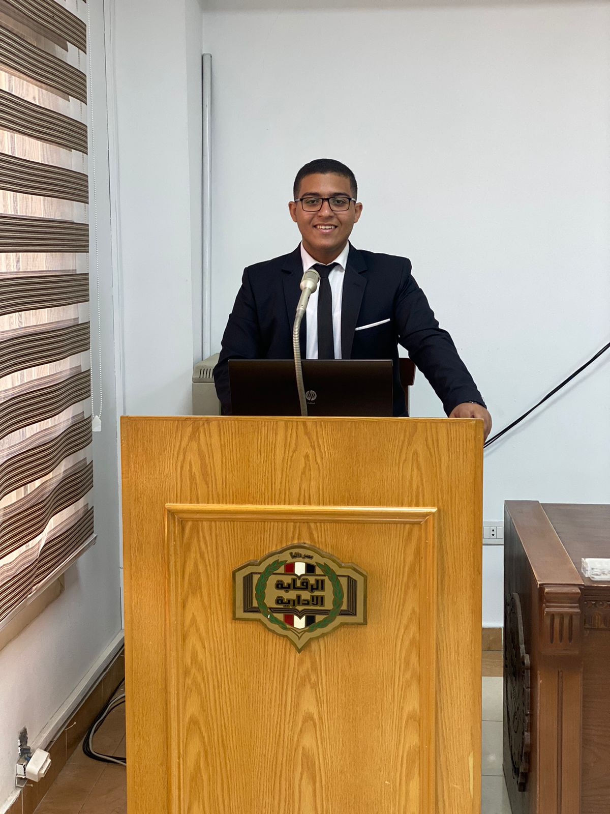

UNIVERSITY LEADERSHIP
President — Delta University Student Union
Representing students and contributing to student activities, engagement, and university life.
Hello, I'm
An Electronics & Communications Engineering student passionate about technology, youth empowerment, and building ideas into meaningful initiatives.

I bring together an engineering mindset and a passion for people. Alongside my studies at Delta University for Science and Technology, I take part in student leadership, community initiatives, and early-stage ventures.
I believe meaningful progress happens when technical knowledge meets collaboration, responsibility, and a clear understanding of community needs.
A selection of roles and experiences across student leadership, technology, and community development.
Representing students and contributing to student activities, engagement, and university life.
Helped establish and lead the student branch, supporting technical learning, workshops, and engineering community activities.
Building student experiences through orientation activities, events, technical sessions, and teamwork.
Supporting entrepreneurship, innovation activities, and student-led ideas.
Contributing to youth engagement, awareness, volunteering, and community initiatives.
Resource Mobilization & Financial Follow-up Officer.
A leadership experience held through 2025.
A snapshot of the spaces where engineering, leadership, and entrepreneurship meet in my work.
Engineering · Leadership · Entrepreneurship
Ideas explored through teams, startups, and sustainability initiatives.
Always learning, building, testing, and collaborating.
Counts reflect the initiatives and focus areas currently featured on this portfolio.
A selection of initiatives I have founded, helped shape, or contributed to. Select a card to explore its focus.
Networking ✳ AI ✳ IoT ✳ PCB Design ✳ Sustainability ✳ Youth Development
Recognition connected to learning, student leadership, entrepreneurship, and community contribution.
TokAi team · 3rd among 122 teams.
VALUE program, delivered with Haya Karima and the National Training Academy.
Recognition for volunteering and community contribution.
Recognition for participation and contribution in youth parliamentary activities.
Recognition for contribution to the foundation's vision.
Supporting certificates and documentation can be added to each recognition item.
A visual journal of the rooms, teams, and conversations that shape the journey. Event photographs will be added to this collection.
These are designed visual panels, not event photographs. Real photos can replace them when you share your selected images.
Open to meaningful collaborations, learning opportunities, and conversations.
ma7033730@gmail.com ↗